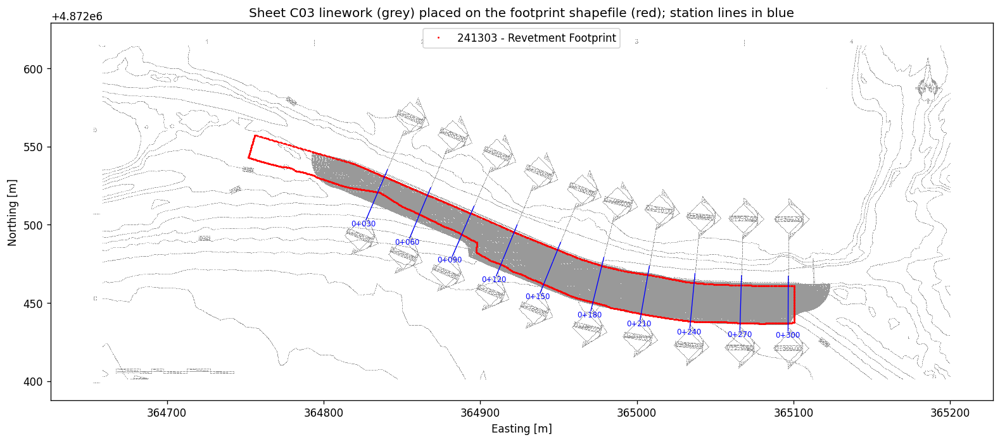
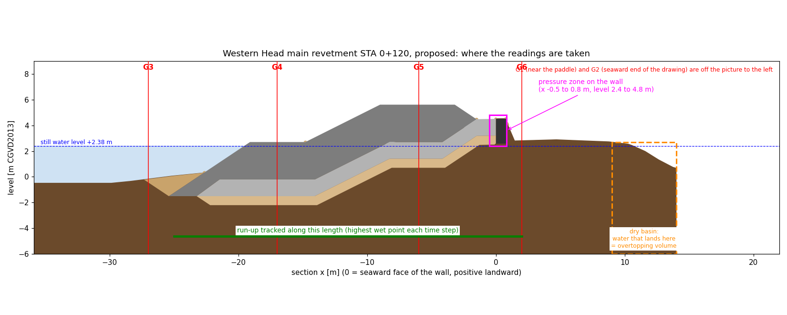
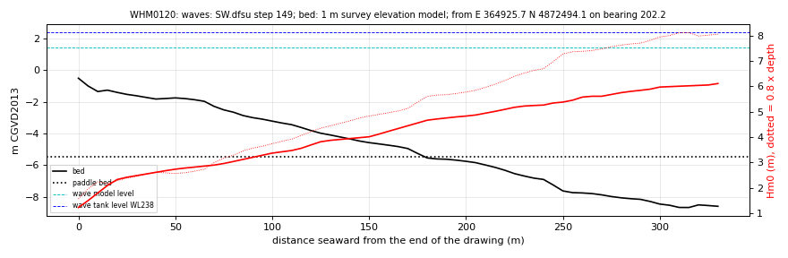
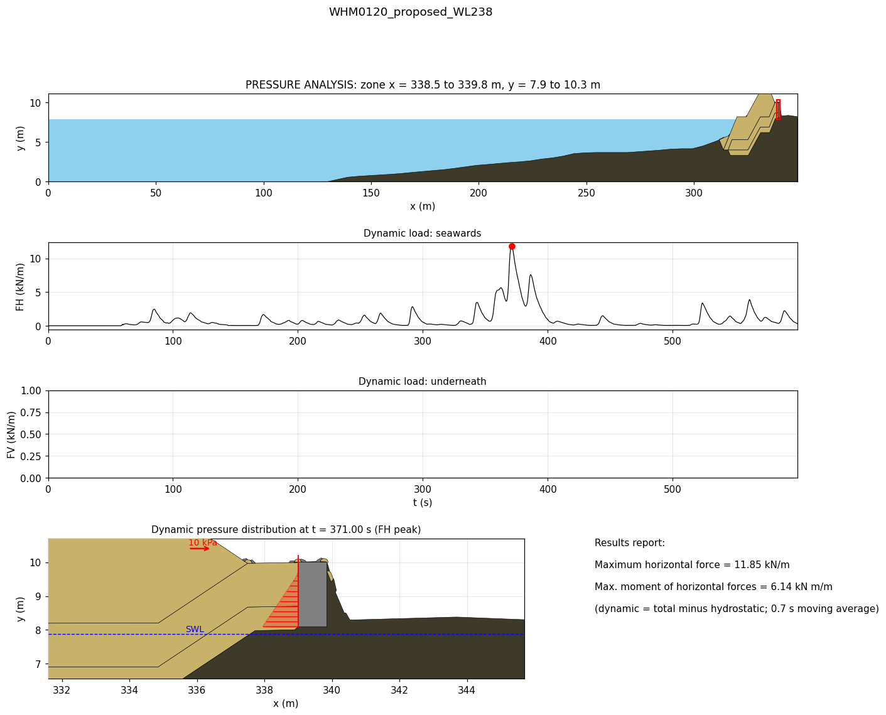
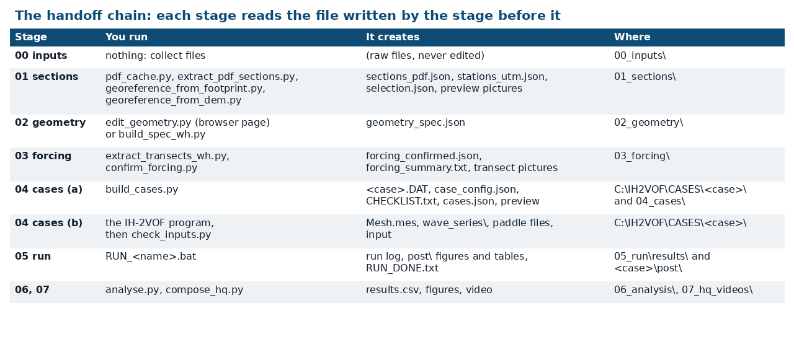
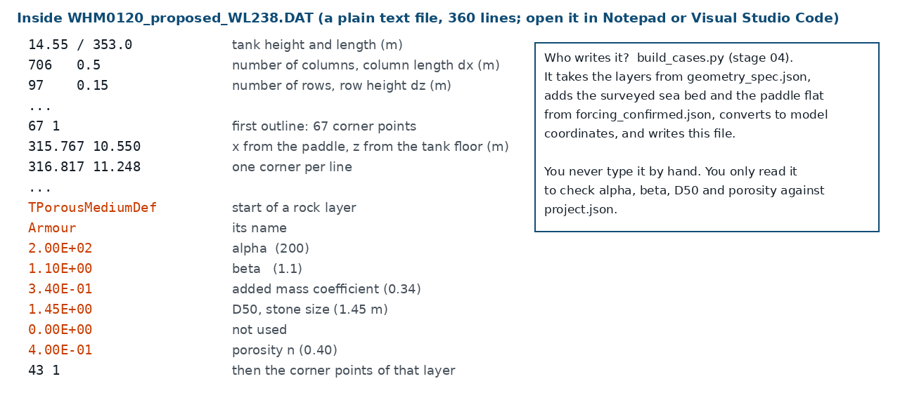
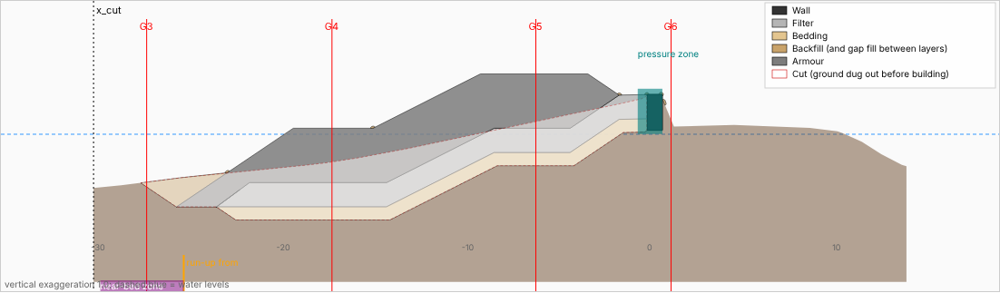

How the IH2VOF model of the Shore Road revetment at Western Head, Nova Scotia was built, what every input means, which checks were run, and how far the answers can be trusted.
Clenmar Rowe, P.Eng., CBCL Limited. Updated 10 October 2026. Worked example: main revetment, station 0+120, proposed design.
1. The pitch
Coastal structures are normally designed with hand formulae: van der Meer for rock size, the EurOtop manual for overtopping, Goda for wave forces on walls. Those formulae are built on thousands of laboratory tests and remain the basis of design. Their weakness is that each one assumes a tidy, standard shape. A real section has a berm, a buried wall, a shallow irregular foreshore and three rock layers, and the formulae do not talk to each other.
IH2VOF is a two-dimensional numerical wave tank developed by the Environmental Hydraulics Institute of Cantabria (IHCantabria), Spain. It solves the equations of fluid motion on a grid, tracks the water surface, and lets water flow through rock layers. It can run the actual section from the drawing, with all its details, under an irregular storm.
A final, independent check on a detailed section once the hand design is done. Does the model see roughly the overtopping EurOtop predicts? Roughly the force Goda predicts? Does anything unexpected happen at the berm, the toe or the wall?
Comparing two versions of the same section under identical waves, showing mechanisms on video, and catching details the formulae cannot represent.
A replacement for the design formulae, a physical model test, or a source of design numbers on its own. It is two-dimensional, the rock parameters here are not calibrated, and each run covers only about 45 waves.
2. The workflow
Every stage lives in its own numbered folder under C:\IH2VOF\Western head\ with a copy of the script that produced it, so any number can be traced back. Scripts and repetitive clicking were automated; the green line under each stage is the check a person has to make.

3. The tank
The model is a vertical slice through the shore, 353 m long and 14.55 m high. Waves are made at the offshore end by a numerical paddle and travel over the real sea bed to the structure.
| Item | Value at station 0+120 | Why |
|---|---|---|
| Still water level | +2.38 m CGVD2013 | Design level in the armour spreadsheet: higher high water plus sea level rise to 2100 (+1.46 m) plus 0.93 m storm surge. |
| Paddle position and depth | bed −5.5 m, depth 7.88 m | Deep enough to generate the waves cleanly, shallow enough to keep the tank short. |
| Flat section at the paddle | 130 m | One wavelength of flat bed so the waves form properly before the slope. |
| Sea bed from paddle to drawing | about 180 m | From the 1 m survey elevation model along the station line. |
| Structure | last 30 m | Traced from the tender drawing. |
| Offshore boundary | Wave paddle with active absorption | Absorbs waves reflected by the structure so they do not bounce back in. |
| Landward boundary | Closed, with a dry basin 9 to 14 m behind the wall | Water that passes the wall drains into the basin and is counted; it cannot slosh back. |

4. The grid
The tank is divided into rectangular cells 0.5 m long and 0.15 m high: 706 columns by 97 rows, about 68,500 cells. Every result is limited by this resolution, so it is worth knowing how many cells cover each feature.
| Feature | Size | Cells across it | Comment |
|---|
Common guidance for this family of models is at least 10 cells per wave height (preferably 15 to 20), at least 70 to 100 cells per wavelength, and a cell length no more than about 2.5 to 5 times its height. This grid meets those for the waves. The weak spots are horizontal: the wall is under two cells wide and each rock layer is only a few cells thick measured along the slope.
It was not found by a convergence study. The cell size was carried over from the earlier Dominica runs and then checked against rules of thumb and against run time. The reasoning, in the order it is done:
| Option | Where to change it | Rough cost for station 0+120 (estimates, not measured) |
|---|---|---|
| Finer everywhere (for example 0.25 m by 0.10 m) | Change dx and dz under "defaults" in C:\IH2VOF\Western head\project.json, or for one station in C:\IH2VOF\Western head\02_geometry\geometry_spec.json. Rerun build_cases.py, then regenerate the mesh, paddle and input in the IH2VOF program. | 3 times the cells and a shorter time step: about 5 to 6 times the run time, roughly 3 days for 600 s. |
| Finer only near the structure (sub-zones) | On the mesh screen of the IH2VOF program, split the length into two zones (coarse offshore, fine over the last 40 m) and the height into three (fine between about −2 m and +7 m). Cell size should change gradually between zones, by no more than about 5 to 10 % from one cell to the next. | About 1.5 times the cells and a shorter time step: about 2.5 to 3 times the run time. |
| Coarser, for a quick look (1.0 m by 0.25 m) | As the first row. | About a quarter of the run time. Only for testing the set-up; not for results. |
No. These runs use one uniform zone: the same 0.5 m by 0.15 m cell from the paddle to the basin and from the floor to the lid. The solid brackets below show that single zone. The dashed brackets show where a finer zone would normally be placed and was not.
Resolution zones for station 0+120. Solid brackets: what was run. Dashed red brackets: the refinement that was not applied.
5. Rock as numbers
The model does not contain individual stones. A rock layer is a zone where water can flow, but feels a drag that depends on how fast it moves and on the stone size. Four numbers describe each layer: the stone size D50, the porosity n (fraction of voids), and two drag coefficients, α and β.
The key point for a reviewer: α and β were kept the same for every rock layer (α = 200, β = 1.1, the values of Liu et al., 1999). What changes from layer to layer is D50 and n. Because a goes with 1/D50² and b with 1/D50, small stone resists flow far more than large stone, with no change to the coefficients.
| Layer | How it is modelled | D50 (m) | n | α | β | a (s/m) | b (s²/m²) | Gradient at 1 m/s | Source of D50 |
|---|
The curves show how the two drag terms fall as stone size grows, for n = 0.40, α = 200 and β = 1.1 with KC large. Dots are the layers in this model. Bedding and backfill sit at the far left: they are almost a barrier compared with the armour.
Nominal diameter from mass: Dn50 = (M50 / ρ)^(1/3) with rock density ρ = 2650 kg/m³. For 7,800 kg this gives 1.43 m, the value on the design sheet.
Western Head has none, but the Dominica runs did, and the question will come up. Vegetation is not rock: it is a sparse field of stems that slows the water by drag. There are two ways to put it in a wave tank model.
Maza, Lara and Losada (2013) extended IH2VOF with a drag force on the plants, F = ½ ρ CD a N |u| u per unit volume, with plant swaying and extra turbulence terms, and validated it against flume tests. That research version is not the program used here; I did not find a vegetation option in its screens.
The vegetation was drawn as a very open porous layer whose resistance was matched to the stem drag. It uses the same four numbers as rock, but they no longer mean "stone size" and "voids between stones".
| Number | Meaning for rock | Meaning for vegetation | Dominica value |
|---|---|---|---|
| Porosity n | Voids between stones, 0.35 to 0.45 | Nearly all water. Geometrically 1 − N·π·d²/4, usually above 0.97 | 0.97 |
| D50 | Stone size | Not a size at all: a tuning length that sets the drag. Smaller means more drag | 0.036 m |
| β | Turbulent drag coefficient | Kept at the rock value; the drag is tuned through D50 | 1.1 |
| α | Viscous drag coefficient | Kept at the rock value; has almost no effect at these speeds | 200 |
Check of the Dominica numbers: 1.1 × 0.03 ÷ (0.97³ × 0.036) = 1.0 per metre, and ½ × 1 × 400 stems/m² × 0.005 m = 1.0 per metre. They match by construction. The 400 stems and 5 mm were assumed, not measured at the site. One published study took a different route to the same place (Chalmoukis et al., 2023): porosity equal to the true water fraction, the stem diameter as the length, α = 1000 and β = 1.1.
| Vegetation | Measured values to start from | Source |
|---|---|---|
| Seagrass (Posidonia oceanica) | 615 ± 34 shoots/m², canopy height 0.8 m (one Mallorca meadow); density varies widely between meadows | Infantes et al. (2012) |
| Salt marsh (Spartina alterniflora) | about 330 to 510 stems/m², stem diameter 8 mm, plant height 0.6 to 1 m | Jadhav and Chen (2012); Yang et al. (2012) |
| Mangrove (Rhizophora) | about 24 prop roots per mature tree, root diameter 0.03 to 0.04 m; roots, trunks and canopy differ, so use separate layers | Ohira et al. (2013), as used by Maza et al. (2019) |
Values as reported by those sources for their sites. A seagrass shoot is several flat blades, not one round stem, so "diameter" there is a blade width and the drag coefficient has to absorb the difference. Use site measurements where they exist.
6. Waves
| Quantity | Value | Source and reasoning |
|---|---|---|
| Storm | 100-year waves, year 2100, from 180° | Step 149 of the spectral wave model results used for the design. |
| Peak period Tp | 15.1 s | Read from the wave model at the paddle position. |
| Wave height in the wave model at the paddle | 4.67 m | At the point where the bed is −5.5 m. |
| Wave height given to the paddle, Hs | 3.5 m | Capped at 0.45 × depth (0.45 × 7.88 = 3.55 m, rounded down). A paddle cannot make a stable irregular sea steeper than that in such shallow water; larger waves would simply break at the paddle. |
| Spectrum | JONSWAP, peak factor 3.3, 512 components | Standard storm spectrum. |
| Length of storm | 600 s, about 47 waves | Limited by run time: 600 s of storm took 14.6 hours of computing for the proposed case. |
| Achieved near the paddle (gauge G1) | 3.43 m | Within 2 % of the 3.5 m target. |
The tender drawing ends 30 m seaward of the wall, where the bed is at −0.5 m and the water is under 3 m deep. A 3 m storm wave cannot exist there; the waves arriving at that point have already broken. A wave paddle placed at the edge of the drawing would have nothing sensible to generate. So the tank has to start further offshore, in water deep enough to hold the storm waves, and let them shoal and break over the real sea bed on the way in. That is the job the wave tank does better than the spectral model, which only carries averaged wave energy and a breaking rule.
The tank for station 0+120 is three pieces joined end to end. Vertical scale stretched.
extract_transects_wh.py starts at the seaward end of the drawn section and steps 5 m at a time along the station line (bearing 202°), reading the bed from the 1 m survey elevation model and the wave height and period from the spectral wave model result file at each step.Check: the picture below. Does the surveyed bed meet the drawn ground without a step?
Plainly: the paddle bed level of −5.5 m was a project default set before the wave data were examined, then checked against the rules below. It was not optimised. Four things limit how shallow a paddle can be:
| Paddle bed level | Depth | Wave model Hs there | Cap (0.45 × depth) | Share of wave height kept | Tank length | Ursell number |
|---|---|---|---|---|---|---|
| −4.5 m | 6.88 m | 4.01 m | 3.10 m | 77 % | about 316 m | 141 |
| −5.5 m (used) | 7.88 m | 4.67 m | 3.55 m | 76 % | 353 m | 122 |
| −6.5 m | 8.88 m | 5.17 m | 4.00 m | 77 % | about 406 m | 108 |
| −7.5 m | 9.88 m | 5.38 m | 4.45 m | 83 % | about 438 m | 96 |
| −8.5 m | 10.88 m | 5.99 m | 4.90 m | 82 % | about 500 m | 87 |
Station 0+120, computed from the same surveyed line and wave model result the workflow uses (C:\IH2VOF\Western head\03_forcing\forcing_confirmed.json). Only the −5.5 m row has been run.
7. Health checks
A numerical model can produce confident-looking nonsense. These are the checks made on every run, with the values from the worked example (0+120 proposed, 600 s).
| Check | What it guards against | Value in the example | Verdict |
|---|---|---|---|
| Input check script | A setting typed wrongly in the program (gauge positions, pressure zone, absorption, duration). | All settings match the intended values. | pass |
| Trapped water cells | Gaps between layer polygons that leave isolated pockets of water under rock. | 0 cells | pass |
| Wave height at G1 against target | The paddle not delivering the intended sea state. | 3.43 m against 3.5 m | pass |
| Time step chosen by the solver | Instability. The solver shortens its time step so water never crosses more than a fraction of a cell per step (the Courant condition). A collapse to tiny steps signals trouble. | 0.005 to 0.048 s, median 0.014 s, 37,640 steps | pass |
| Pressure solver iterations | The pressure solution failing to converge. | at most 62 per step | pass |
| Largest velocity anywhere | Unphysical spikes. Shallow-water wave speed here is √(g·h) ≈ 8.8 m/s; breaking jets can reach about twice that. | 15.0 m/s, in isolated spray cells | acceptable, watch |
| Water volume in the tank | The model creating or losing water. Computed from the saved water-surface frames, not from the solver's own counter. | drift 1.9 % over 600 s | pass |
| Run completes | Crashes. Any case that fails twice is stopped and investigated, not retried blindly. | Finished at 600 s. | pass |
8. Example result
Zero in 600 s. At the largest wave group the water rose through the rock to about +4 m against a wall top of +4.5 m.
3.43 m near the paddle, 2.29 m at the toe gauge, 1.43 m on the upper slope: the foreshore and the rock remove most of the energy.
Peak 11.9 kilonewtons per metre at 371 s. In the first 300 s the peak is only 2.8, which is why storm length matters.

9. Hand checks
With the design wave of 3.24 m, freeboard 3.22 m (crest +5.6 m, water +2.38 m) and the 5.8 m crest, EurOtop gives of the order of 1 to 10 litres per second per metre depending on the roughness factor. Put in the wave height the tank actually had at the toe gauge (2.29 m) and the answer drops to a few hundredths of a litre per second per metre, effectively zero over 47 waves. So the tank's "zero" is consistent with EurOtop for the wave the tank delivered. The open question is which toe wave height is right, which is the same question raised in section 6. That is the value of the cross-check: it points at the input that needs settling.
Yoshimi Goda (1974; textbook 2000) gave a single set of formulae for the wave pressure on a vertical wall that works for both non-breaking and breaking waves. It is the standard for caisson breakwaters and quay walls worldwide. The idea is simple: assume a pressure diagram of a fixed shape, then use coefficients to set its size.
Goda's pressure diagram. h: water depth in front of the wall. d: depth to the top of the armour on the mound. h′: depth to the base of the wall. hc: wall crest above still water. B: base width.
The starting values are an illustrative caisson, not a project structure. Sea water density 1,030 kg/m³.
Sliding and overturning design of vertical walls standing in water, under non-breaking and ordinary breaking waves. Calibrated on model tests and on real breakwaters that slid or stayed put.
Violent "impulsive" breaking on a high mound or steep bed. Takahashi et al. (1994) added an impulsive coefficient that replaces α2 when larger; in the Dominica check it nearly doubled the force.
Walls whose base is above the water, walls set back behind a rock crest or beach, and local slamming pressures on small elements. It gives a force for stability, not a pressure map for concrete design.
Goda's method gives the pressure on a vertical wall standing in water. It was applied to the two Portsmouth docks in the Dominica study, where the walls do stand in water at the higher sea level:
| Structure (sea level +1.48 m) | Model peak force | Goda | Goda with impulsive allowance (Takahashi et al., 1994) | Model ÷ Goda |
|---|---|---|---|---|
| Dock SD1, horizontal | 34.1 kN/m | 77.8 kN/m | 146.1 kN/m | 0.44 |
| Dock SD2, horizontal | 70.9 kN/m | 160.1 kN/m | 290.3 kN/m | 0.44 |
| Dock SD1, uplift | 32.4 kN/m | 75.9 kN/m | not calculated | 0.43 |
The model gave a little under half of Goda in both cases. That is the expected direction: Goda is a design envelope, and a model with 0.5 m cells and smoothed pressures cannot resolve the sharpest part of an impact. The conclusion drawn was that Goda governs structural design and the model forces are a lower bound.
10. Reliability and validation
IH2VOF descends from COBRAS, developed at Cornell University (Lin and Liu, 1998), which was extended at the University of Cantabria (as COBRAS-UC) and then rewritten as IH2VOF. It solves the Reynolds-averaged Navier-Stokes equations with a volume-of-fluid surface, and volume-averaged equations inside porous layers. It has been compared with laboratory measurements for over twenty years.
| Study | What was compared with laboratory data |
|---|---|
| Lin and Liu (1998) | Breaking waves in the surf zone: surface elevation, velocities, turbulence. |
| Liu et al. (1999); Hsu et al. (2002) | Flow through porous structures and in front of a composite breakwater; the porous-flow equations used here. |
| Garcia et al. (2004); Losada et al. (2005); Lara et al. (2006) | Regular and random waves on low-crested permeable breakwaters: surface elevation, pressure and velocity inside and outside the rock. |
| Losada et al. (2008) | Overtopping of rubble mound breakwaters: instantaneous and mean discharge against flume tests. |
| Lara et al. (2008) | Low-mound breakwaters with a crown wall: free surface and pressures. |
| Guanche et al. (2009) | Wave loads and stability of composite and rubble mound breakwaters: pressures and forces on the crown wall and caisson against tests. |
| Torres-Freyermuth et al. (2010); Lara et al. (2011) | Short and long wave transformation and run-up on beaches. |
Wave transformation and breaking on a foreshore, water levels and pressures in and around rock structures, and mean overtopping of rubble mounds, when the porous coefficients are calibrated and the turbulence model is on.
Forces on crown walls: good agreement for slowly varying (pulsating) loads; short impact peaks depend strongly on grid and sampling.
No comparison with measurements was made for Western Head. The published validation shows the tool can work; it does not validate this particular setup.
11. Limits
12. Do it yourself
13. Video tutorial
Recorded on the real computer, stage by stage. Each part opens with the script to run and the file it creates, and ends by showing the new file in File Explorer, so the handoff from one stage to the next is visible. It covers File Explorer, a script opened in Visual Studio Code, the geometry editor in the browser, the case builder that writes the .DAT file, the IH-2VOF program itself, the batch files, the run log and the result figures. A yellow circle marks the pointer and a coloured tag says whether to click, double-click, type or just read. 94 steps, about 22 minutes, no sound. It is made from a screenshot at each step, so it moves step by step.
C:\IH2VOF\CASES\_TUTORIAL_demo_project\ and the case TUTORIAL_demo_case) so the running project cases were not touched. Stages 0, 1, 3 and 5 show the real project folders; their scripts are pointed at, not rerun.
The geometry editor only saves geometry_spec.json: the layers in section coordinates. The .DAT file is written one stage later by build_cases.py, which joins that file with the surveyed sea bed and paddle flat from forcing_confirmed.json, converts everything to model coordinates (x from the paddle, z from the tank floor) and writes one .DAT per case, with case_config.json and CHECKLIST.txt beside it.

That was a drawing fault in the editor page, not something in the model. The editor had no colour for three materials (bedding, the "cut", and thin gap fills), and drew them black. The largest black shape was the cut: the existing ground that is dug out before the revetment is built. The case builder removes that ground from the solid bed; it is not a material in the tank. The page now colours every material and has a legend, and the video was re-recorded with it. The .DAT files and the runs were not affected.

Sections normally live in Civil 3D, and exporting a DXF is faster and more exact than reading a PDF. Civil 3D section views are special objects that a plain DXF reader cannot see, so they are first exported as ordinary lines.
EXPORTTOAUTOCAD (or Output, Export, Export Civil 3D Drawing). This writes a copy in which the section views are ordinary polylines, hatches and text. The original is untouched.A-ARMOUR-PROPOSED, A-EG-EXISTING. Roles: EG, ARMOUR, TOE, FILTER, BEDDING, BACKFILL, WALL.extract_sections.pyIt lists every layer it could not interpret. Note one grid line of known level per section: the drawing height is not the level, and the difference is the "datum offset" the next script asks for.Check: the preview picture against the drawing.| If the drawing is not layered properly | What to do | Time |
|---|---|---|
| Layers exist but have other names | Do not rename in CAD. Add each name and its role to "layer_roles" in project.json and rerun. | Minutes |
| Everything on one or two layers | In CAD use BOUNDARY (click inside each rock layer) to make one closed polyline per layer, or HATCHGENERATEBOUNDARY where a layer is drawn as a hatch. Join the existing ground into one open polyline. Move each to its named layer. | 5 to 10 minutes per section |
| Linework unusable (blocks, images, broken lines) | Build the layers from the drawing dimensions in the geometry editor (shown in the click-through), or use the PDF route. | 15 to 30 minutes per section |
The Civil 3D command names are from general knowledge of the program and were not tested in this project, which used the PDF route. Check them in your version. The times are estimates.
One video per numbered folder, from collecting the inputs to the output figures and the standard video. They are captioned slides with real pictures and commands from the Western Head project; there is no sound, so pause as needed. Total about 13 minutes. A single joined version is here.
A clean copy of the folder structure, with the scripts and a README.txt in every folder describing each file, is at C:\IH2VOF\CASES\_TEMPLATE_design_runs\. To start a project: copy it, rename it, edit project.json, and work through the folders in number order.
| Folder | What you do there | Main output | Your check |
|---|---|---|---|
00_inputs | Collect drawings, rock sizing, wave model results, survey, footprint. | Raw files, never edited | Current issue? Same datum? |
01_sections | Read the section linework from the drawing; fix the station position. | sections_pdf.json, stations_utm.json | Preview against drawing; position against survey. |
02_geometry | Layers as closed outlines with materials; gauges; pressure zone. | geometry_spec.json | Levels and thicknesses; no gaps between layers. |
03_forcing | Walk offshore to the handoff point; cap the wave; add the paddle flat. | forcing_confirmed.json | Cap ratio; water level of the wave model. |
04_cases | Build case folders; prepare each in the IH2VOF program; check inputs. | Case folders, CHECKLIST.txt | Input check prints PASS; zero trapped water cells. |
05_run | Start and queue batches; watch; stop. | Run log, figures per case | Health checks (section 7). |
06_analysis | Results table and report. | results.csv, figures | EurOtop and Goda by hand (section 9). |
07_hq_videos | Standard video with the drawing overlaid. | <case>_plan.mp4 | One frame inspected before the full render. |
14. Self-test
15. References
Journal links below were checked against the publisher or a citation index on 10 October 2026; for the vegetation field-data papers (Infantes, Jadhav, Ohira, Yang) the titles and author lists are as found by search and should be checked before quoting. Links marked free to read open the full text. Links marked journal site open the publisher page; the full text needs a subscription or a library request. Those papers are copyrighted, so copies are not stored on this page. Saved in a private folder they can be opened at an exact page by adding #page=12 to the file address in a browser.